第八章 图论
存图、遍历、生成树、最短路、连通性、二分图、网络流与高级结构，全教程最长也最杂的一章。
图论部分简介
- 图论研究的对象是“点 + 边”的关系模型，是建模能力最强的一类结构（交通网、社交关系、依赖关系、状态转移都可抽象成图）。
- 本章主线：基础概念与存储 → 遍历 → 生成树 → 树上的算法 → 连通性/路径（欧拉、哈密顿）→ 二分图与匹配 → 网络流 → 高级结构。
- 学习建议：先把“图的表示 + DFS/BFS”练扎实，再逐层上难度；网络流与匹配的代码模板要能默写。
- 常见数据范围与算法选择（经验值）：
- n ≤ 1e5、边权非负单源最短路 ⇒ Dijkstra + 堆；
- 有负权 ⇒ SPFA（慎用）或 Bellman-Ford；
- 任意两点最短路 n ≤ 500 ⇒ Floyd；
- 连通性/合并 ⇒ 并查集；
- 最小生成树 ⇒ Kruskal（稀疏）/ Prim（稠密）。
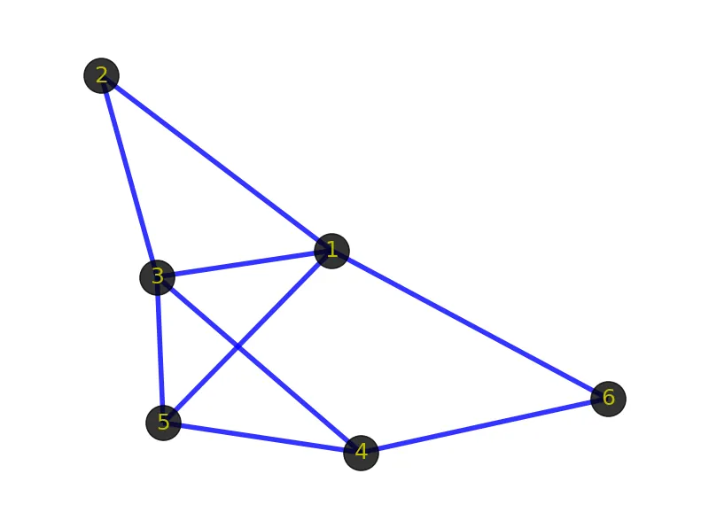
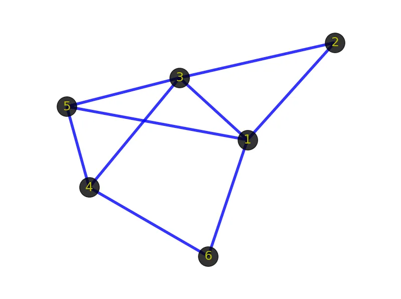
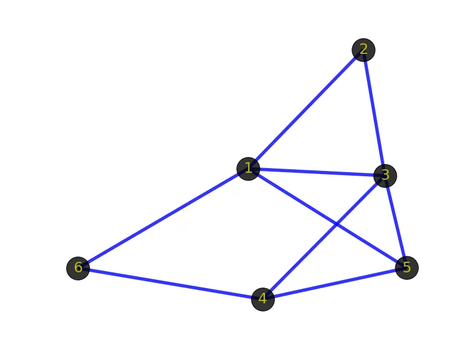
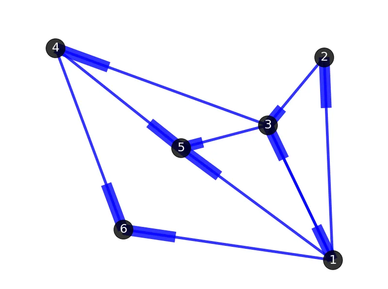
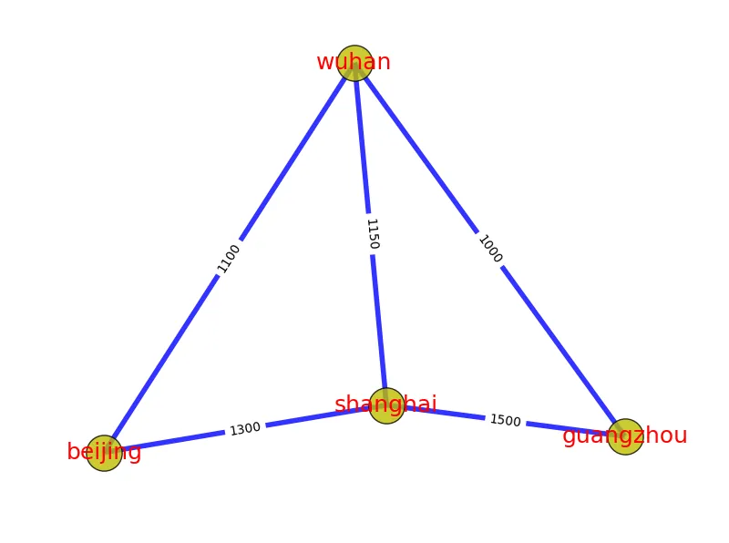
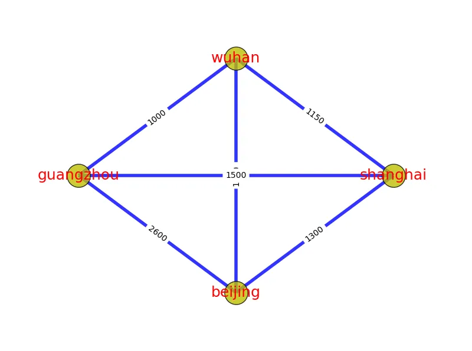
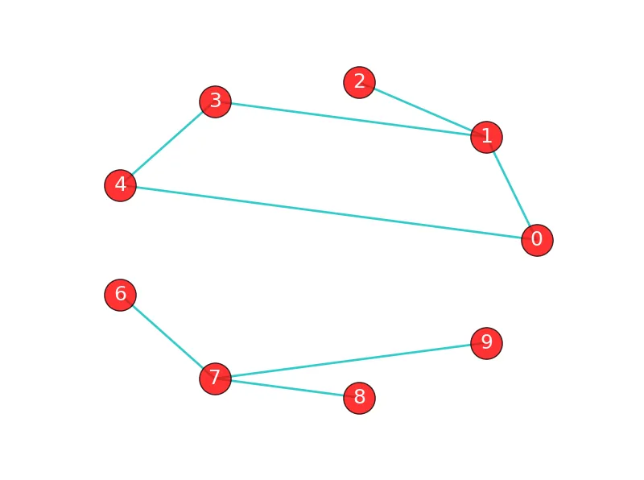
图的基础概念
- 顶点（Vertex）与边（Edge）：边可带权、可带方向。
- 分类：无向图 / 有向图；简单图（无自环、无重边）/ 多重图；稀疏图 / 稠密图。
- 度：无向图中与点相连的边数；有向图分离为入度、出度（
Σ入度 = Σ出度 = 边数）。 - 路径与回路：路径是顶点序列，回路（环）是首尾相同的路径；简单路径要求顶点不重复。
- 连通性：无向图连通 ⇒ 任意两点有路径；有向图分强连通（互相可达）与弱连通（忽略方向后连通）。
- 完全图：任意两点间都有边，n 个点有
n(n-1)/2条边（有向为n(n-1)）。 - 子图/生成子图：顶点与边的子集；生成树是含全部 n 个点、只有 n-1 条边的连通子图。
- 竞赛常用术语：
n点数、m边数、u→v有向边、w边权。
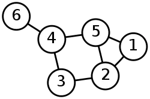
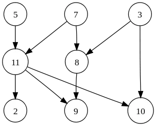
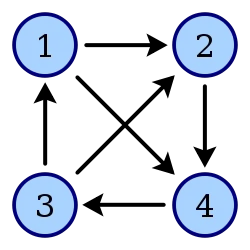
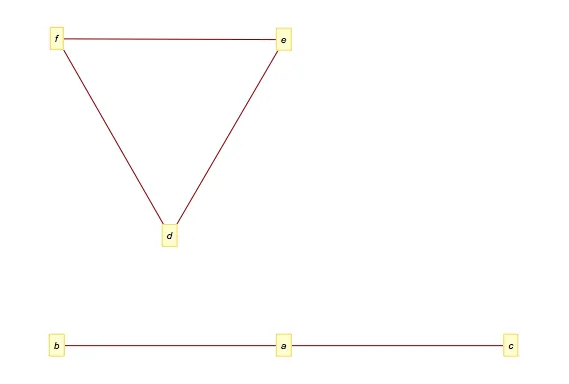
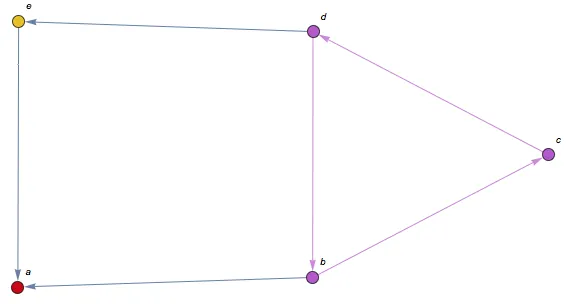
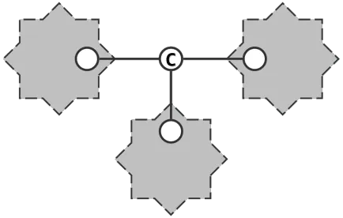
图的储存方式
- 邻接矩阵：
g[u][v] = w，空间O(n²)；适合稠密图、Floyd、矩阵树定理；判重边方便。 - 邻接表：每个点挂一条边表，空间
O(n+m)；最常用，遍历效率高。 - 数组模拟（链式前向星）：
head[u]、to[i]、w[i]、nxt[i]，addEdge头插； vector<pair<int,int>> g[N]：写法最简，常数略大。- 边集数组：只存
(u, v, w)，适合 Kruskal、Bellman-Ford 等“按边处理”的算法。 - 选型：稠密 + 小 n 用矩阵；稀疏 + 大 n 用邻接表；只要边排序用边集。
- 无向边拆成两条有向边；有向图反向边用于网络流的残量。
// 链式前向星（普通存图用这个即可，tot 从 0 开始）
int head[N], to[N << 1], w[N << 1], nxt[N << 1], tot = 0;
void addEdge(int u, int v, int c) {
to[++tot] = v, w[tot] = c, nxt[tot] = head[u], head[u] = tot;
}- 注意：这里的
tot从 0 开始、每条边编号 1..m；而网络流里为了用i ^ 1取反向边，tot必须从 1 开始并成对加边（见第 33 节），两种编号方式不要混用。
图文解析图论DFS（深度优先搜索）
- 从起点出发，沿一条边深入，走不通就回退，直到访问完所有可达点。
- 递归模板：标记访问 → 遍历邻接点 → 未访问则递归。
void dfs(int u) {
vis[u] = true;
for (int i = head[u]; i; i = nxt[i]) {
int v = to[i];
if (!vis[v]) dfs(v);
}
}- 复杂度：邻接表
O(n+m)，邻接矩阵O(n²)。 - 用途：连通块计数、判环（有向图需三色标记：未访问/在栈中/已完成）、求割点与桥、拓扑排序（后序逆序）、树遍历。
- 注意：递归深度可能达 1e5，需手动扩栈或改栈模拟；无向图要跳过“父亲”。
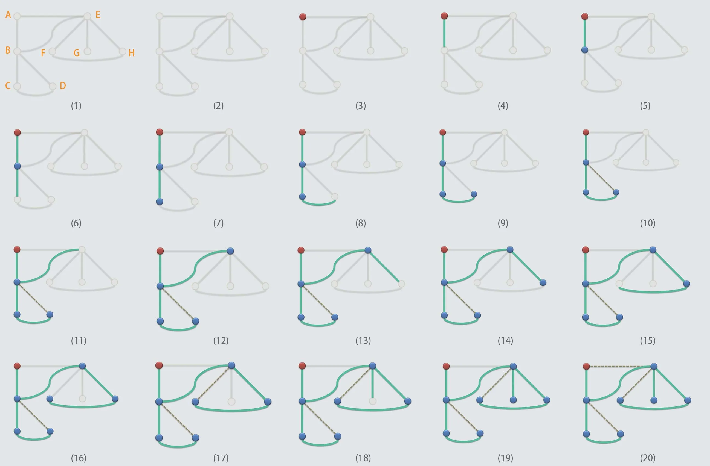
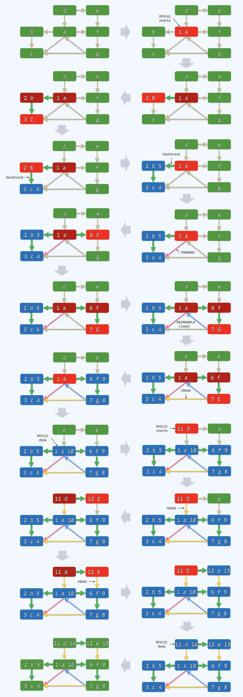
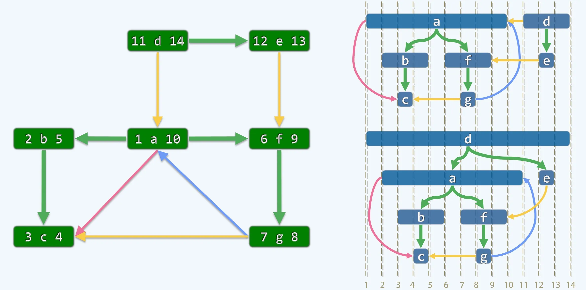
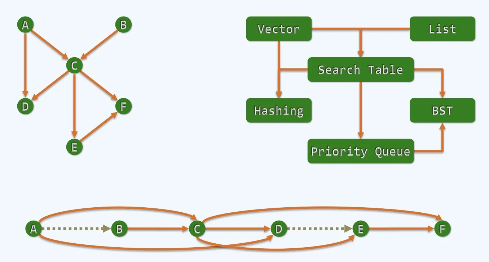
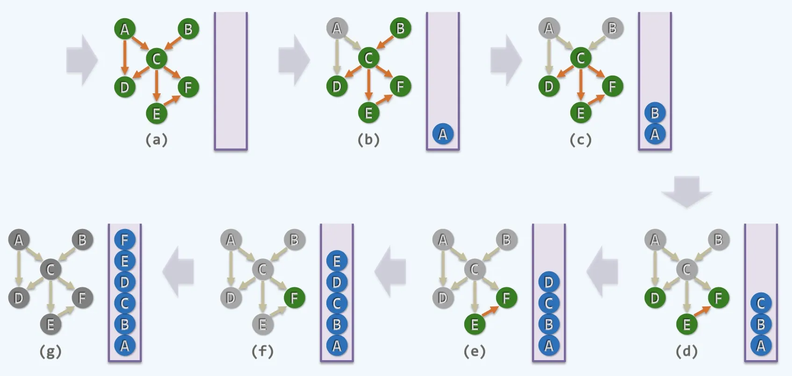
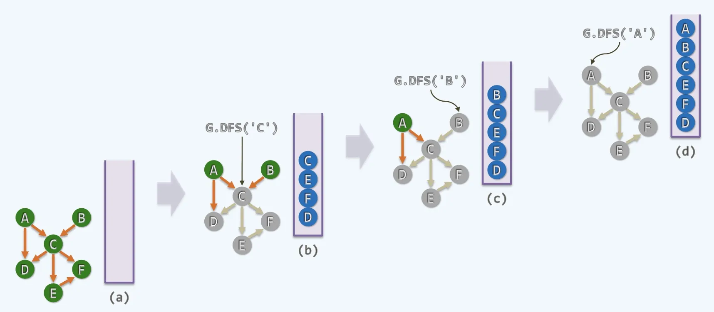
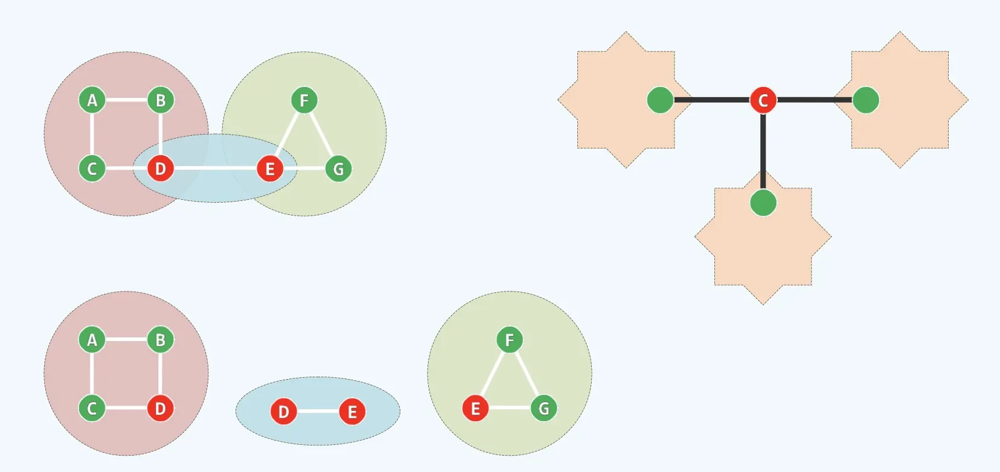
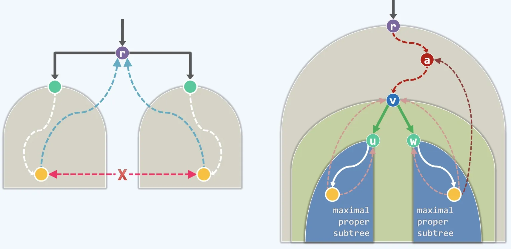
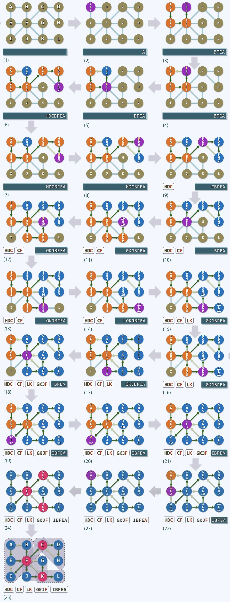
图文解析图论BFS（广度优先搜索）
- 用队列逐层扩展，第一个到达的点即最短边数（BFS 层数）。
- 模板：起点入队并标记 → 取队首 → 扩展未访问邻接点入队 → 直到队空。
queue<int> q; q.push(s); vis[s] = true; d[s] = 0;
while (!q.empty()) {
int u = q.front(); q.pop();
for (int i = head[u]; i; i = nxt[i]) {
int v = to[i];
if (!vis[v]) { vis[v] = true; d[v] = d[u] + 1; q.push(v); }
}
}- 用途：无权图最短路、层次遍历、二分图染色（相邻点染相反色）、求连通块、多源 BFS。
- 与 DFS 的分工：求“最短步数/最少边数”一定用 BFS；求“全部方案/路径枚举”用 DFS。
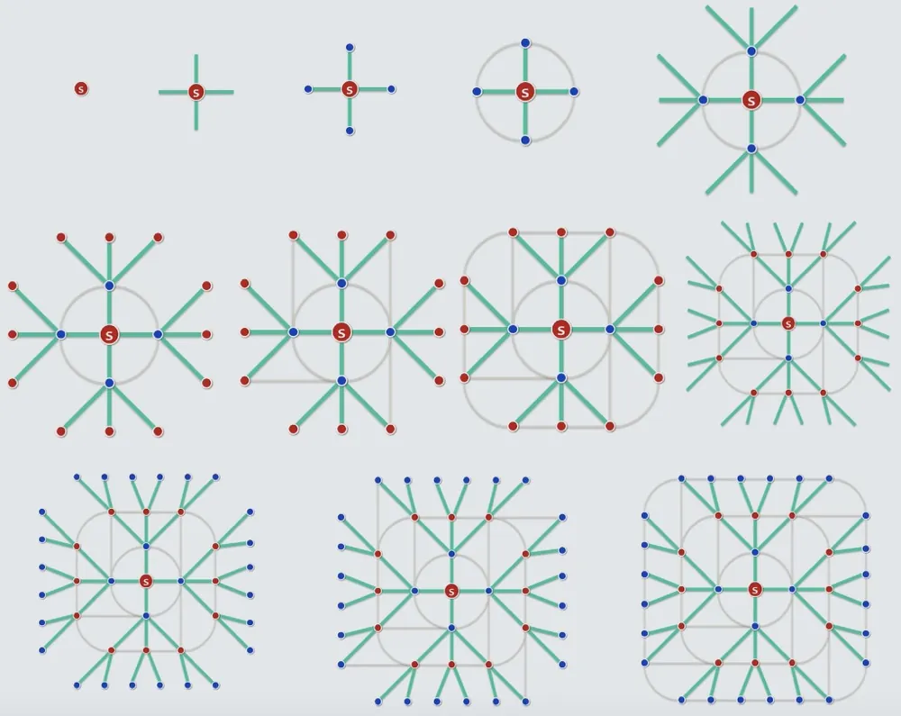
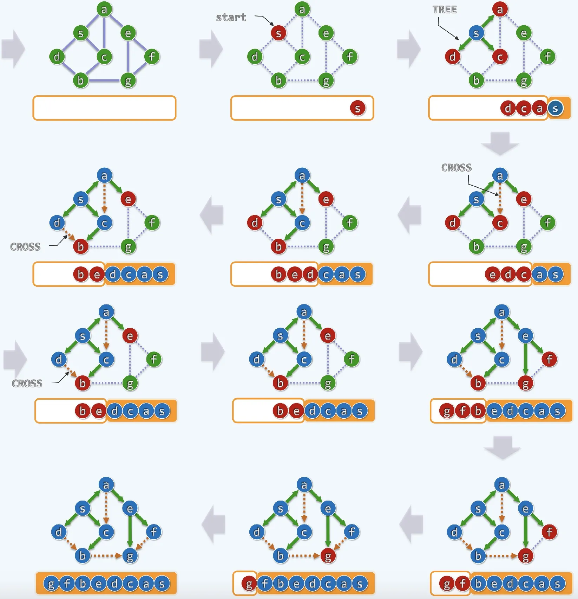
图论矩阵树定理实例讲解
- 内容：用图的拉普拉斯矩阵求生成树个数。
- 构造：
L = D - A（D 为度数对角阵，A 为邻接矩阵）；无向图删掉任意一行一列，剩下的行列式即生成树个数。 - 有向图：出度矩阵对应“以 i 为根的外向树”，入度矩阵对应内向树；根要删掉对应行列。
- 带权版本：把
A[u][v]换成权值，D[u]换成关联边权之和，得到的行列式是所有生成树边权乘积之和。 - 计算：高斯消元求行列式（模质数用逆元；实数用主元消元），复杂度
O(n³)。 - 用途：统计生成树方案数、带权期望/概率题（如“随机游走回到起点的期望”）。
- 易错：模数不一定是质数时要用“辗转相除消元”；重边要累加而不是覆盖。
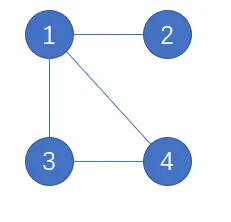
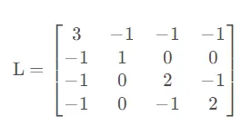
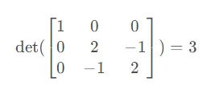
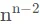
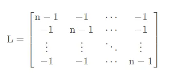
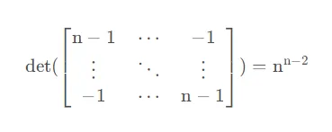
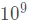

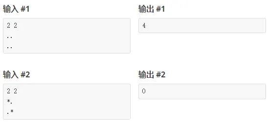
有向无环图图文讲解
- DAG：有向且无环的图，是“依赖关系”“任务调度”“表达式求值”的通用模型。
- 性质：一定存在拓扑序；最长路可在多项式时间求出（一般图最长路是 NP-hard）。
- 常见处理：拓扑排序 → 按序 DP；缩点（Tarjan）后可把任意有向图转成 DAG。
- 应用：AOE 网关键路径（最早/最迟开始时间）、编译依赖、DP 的状态转移图。
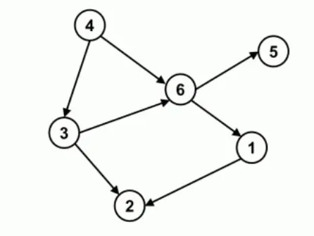
什么是拓扑排序？
- 定义：把 DAG 的点排成序列，使每条边
u→v都满足 u 在 v 之前。 - Kahn 算法（BFS）：统计入度 → 入度 0 入队 → 出队时把邻点入度减 1，减到 0 入队。
- 复杂度
O(n+m)；若输出点数 < n，说明图中有环（可用于判环）。 - DFS 法：后序遍历，逆序输出即拓扑序；也能判环（遇到“在栈中”的点即有环）。
- 用途：DP 的顺序、依赖解析、判 DAG、求字典序最小的拓扑序（把队列换成小根堆）。
for (int i = 1; i <= n; ++i) if (!deg[i]) q.push(i);
while (!q.empty()) {
int u = q.front(); q.pop(); ord[++cnt] = u;
for (int i = head[u]; i; i = nxt[i])
if (--deg[to[i]] == 0) q.push(to[i]);
}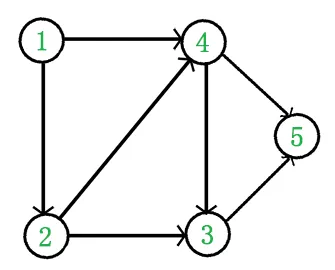
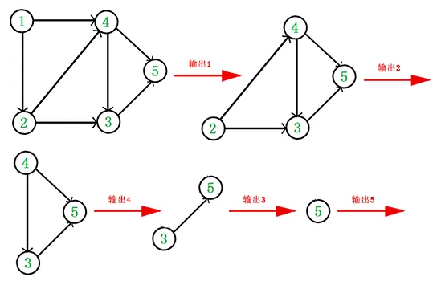
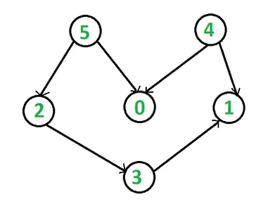
最小生成树图文讲解
- 定义：连通无向图中，边权和最小的生成树（n-1 条边）。
- Kruskal：边按权排序，用并查集依次尝试加入，不成环就选；复杂度
O(m log m)，适合稀疏图。 - Prim：从任一点开始，每次选“连接已选集合与未选集合的最短边”；朴素
O(n²)，堆优化O((n+m) log n)，适合稠密图。 - 正确性靠切性质/环性质：最小生成树中，任意切割的两部分之间必取最短的跨界边。
- 性质：MST 的最大边是所有生成树中最小的（瓶颈最小）；MST 不唯一但权值和唯一。
- 变体：最大生成树（边权取负）、次小生成树（枚举替换一条边）、最小瓶颈生成树。
sort(e + 1, e + m + 1, [](Edge a, Edge b) { return a.w < b.w; });
for (int i = 1; i <= m; ++i)
if (find(e[i].u) != find(e[i].v)) {
merge(e[i].u, e[i].v); ans += e[i].w; if (++cnt == n - 1) break;
}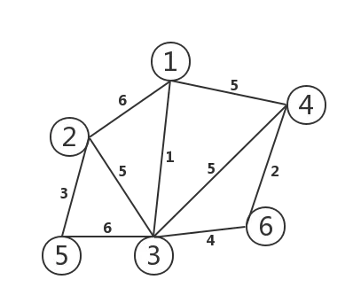
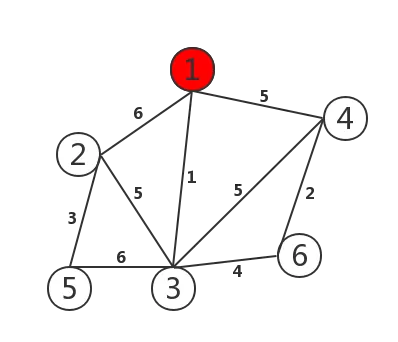
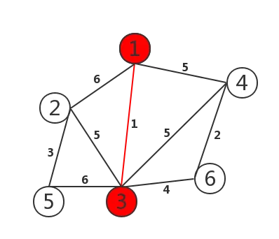
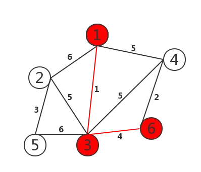
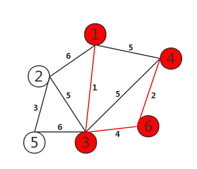
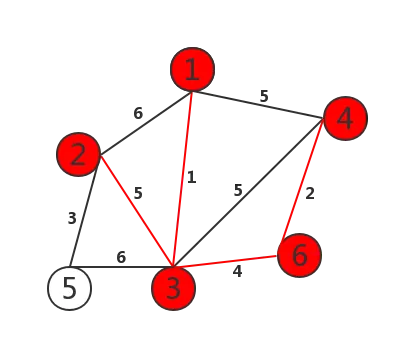
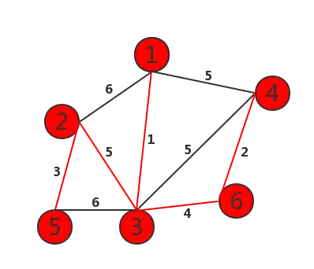
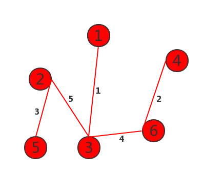
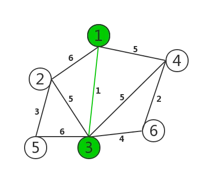
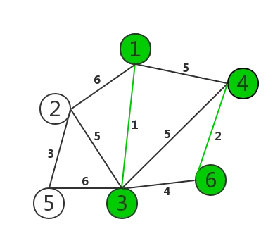
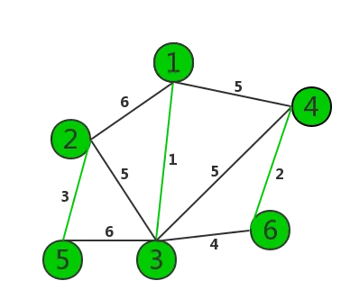
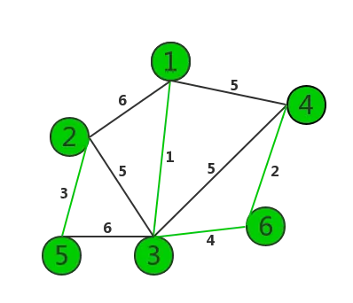
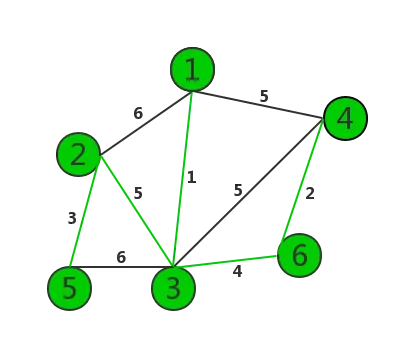
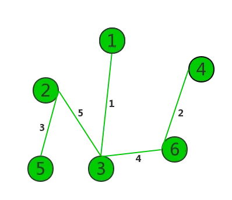
斯坦纳树Steiner Tree实例讲解
- 定义：连通无向图 + 指定点集 S，求使 S 中所有点连通的最小权子树（不要求包含全部点）。
- 做法：状压 DP + 最短路，状态
f[mask][i]= 使 mask 集合连通且以 i 为根的子树最小代价。 - 两步转移：
- 合并（同一根下合并两个子集）：
f[mask][i] = min(f[sub][i] + f[mask^sub][i])； - 扩展（换根）：对每层 mask 跑一次 Dijkstra/SPFA 松弛
f[mask][v] = min(f[mask][u] + w)。 - 复杂度
O(3^k·n + 2^k·(m log n))（k = |S|，通常 k ≤ 10）。 - 应用：多关键点连通、网络布线、虚拟骨干网设计。
for (int mask = 0; mask < (1 << k); ++mask) {
for (int i = 1; i <= n; ++i)
for (int sub = (mask - 1) & mask; sub; sub = (sub - 1) & mask)
f[mask][i] = min(f[mask][i], f[sub][i] + f[mask ^ sub][i]);
dijkstra(mask); // 以 f[mask][*] 为初值做多源最短路
}


DFS求有向图(无向图)两点间路径
- 需求：输出从 s 到 t 的所有简单路径（或判断是否存在、输出任意一条）。
- 做法：DFS + 记录前驱/栈；到达 t 时输出栈中路径；回溯时弹出。
- 判“是否连通/是否存在路径”：找到即返回，无需回溯（标记永久保留）。
- 若要“最短路径”：BFS 记录前驱，回溯得到路径。
- 复杂度：最坏指数级（路径数可能爆炸），n 大于 20 左右就不适合枚举全部路径。
void dfs(int u) {
stk[++top] = u; vis[u] = true;
if (u == t) { print(stk, top); }
for (int i = head[u]; i; i = nxt[i])
if (!vis[to[i]]) dfs(to[i]);
vis[u] = false; --top; // 回溯，允许其它路径经过 u
}树的基础知识
- 定义：n 个点、n-1 条边、连通且无环的无向图；任意两点间路径唯一。
- 术语：根、父/子、兄弟、叶子、深度、高度、子树、祖先/后代。
- 重要性质：
- 边数 = 点数 - 1；
- 任意两点路径唯一（这也使树上问题可用“路径 = u→lca→v”刻画）；
- 删除任一条边会分成两棵子树（对应“子树大小”和“补集大小”）。
- 存储：邻接表（无根）→ DFS 定根后转“有根树”，记录
fa[u]、dep[u]、sz[u]。 - 树上的“前缀和”思想：
sum[u] = sum[fa[u]] + w[u]，则路径和 =sum[u] + sum[v] - 2·sum[lca] (+ w[lca])。
void dfs(int u, int p, int d) {
fa[u] = p; dep[u] = d; sz[u] = 1;
for (int v : g[u]) if (v != p) { dfs(v, u, d + 1); sz[u] += sz[v]; }
}树的直径实例讲解
- 定义：树上最远两点的距离（边权和或点数）。
- 求法一（两遍 DFS/BFS）：任取一点 A 找到最远点 B，再从 B 找最远点 C，B-C 即直径。
- 正确性依赖“树上任意点的最远点一定是某条直径的端点”。
- 求法二（树形 DP）：DFS 时维护“以 u 为顶端的最长下行链”与“次长下行链”，二者之和的最大值即直径。
int dfs(int u, int p) {
int mx1 = 0, mx2 = 0;
for (auto [v, w] : g[u]) if (v != p) {
int d = dfs(v, u) + w;
if (d > mx1) mx2 = mx1, mx1 = d; else if (d > mx2) mx2 = d;
}
ans = max(ans, mx1 + mx2);
return mx1;
}- 注意：负权边时“两遍 DFS”失效，只能用 DP 版本。
什么是树的重心？
- 定义：删去该点后，剩余各连通块中最大块的点数最小的点（至多两个）。
- 性质：
- 重心所有子树大小 ≤ n/2；
- 到所有点的距离之和最小；
- 两棵树连边后，新重心在原来两重心的路径上。
- 求法：DFS 求子树大小，检查
max(n - sz[u], max sz[v])是否 ≤ n/2。
void dfs(int u, int p) {
sz[u] = 1;
for (int v : g[u]) if (v != p) { dfs(v, u); sz[u] += sz[v]; }
if (max(n - sz[u], mxch[u]) <= n / 2) centroid = u;
}- 应用：树的分治（点分治）、重心分解、树上带权距离和最小化。
树链剖分解决什么问题？
- 解决的问题：把树上的路径/子树操作转成序列上的区间操作，交给线段树/树状数组处理。
- 核心概念：
- 重儿子：子树最大的儿子；重链：沿重儿子连成的链；
dfn：按“先重儿子”的 DFS 序，使同一条重链在序列上连续、子树也连续。- 路径操作：
u→v拆成若干重链区间，边跳top边在线段树上操作，O(log²n)。 - 子树操作：利用
dfn区间[dfn[u], dfn[u]+sz[u]-1]，一次区间操作O(log n)。 - 支持：路径加/求和/最值、子树加/求和、LCA（跳链求）。
- 代码量较大，是“树上问题 + 修改”的主力工具。
void pathUpdate(int u, int v, int val) {
while (top[u] != top[v]) {
if (dep[top[u]] < dep[top[v]]) swap(u, v);
segUpdate(dfn[top[u]], dfn[u], val); u = fa[top[u]];
}
if (dep[u] > dep[v]) swap(u, v);
segUpdate(dfn[u], dfn[v], val);
}
树上启发式合并
- 定义：又称 DSU on Tree（“树上并查集”），用于离线统计子树信息，总复杂度
O(n log n)。 - 思路：对每个点，先递归处理轻儿子（算完清空），再处理重儿子（保留结果），然后把轻儿子的贡献暴力加进来。
- 复杂度分析：每个点被“暴力加入”的次数 = 它到根的轻边数 =
O(log n)。 - 适用：子树内“颜色种数”“出现次数最多”等可增量维护的统计量，且不需要修改。
- 与莫队、树链剖分的区别：DSU on Tree 只处理“子树”查询，代码短、常数小。
void dfs(int u, int p, bool keep) {
for (int v : g[u]) if (v != p && v != heavy[u]) dfs(v, u, false);
if (heavy[u]) dfs(heavy[u], u, true);
for (int v : g[u]) if (v != p && v != heavy[u]) addSubtree(v, u);
add(u); ans[u] = cur;
if (!keep) clearSubtree(u, p);
}什么是虚树？
- 定义：只保留“关键点（询问点）及其两两 LCA”构成的压缩树，把大树的规模从 n 降到
O(k)（k 为关键点数）。 - 构造：把所有关键点按
dfn排序 → 相邻点求 LCA 并加入集合 → 再排序 → 用栈按 dfn 顺序建边。 - 用途：多次询问、每次只涉及少量点的树上 DP（如“每次给 k 个点，求它们构成的连通块权值和”），总复杂度
O(Σk log n)。 - 注意：虚树边权是“原树上两点距离”（用
dis[u]+dis[v]-2dis[lca]），不是 1。
// 建虚树：h[] 为关键点 + 其 LCA，按 dfn 排序后用栈连边
sort(h + 1, h + k + 1, cmp);
for (int i = 1; i < k; ++i) h[++k] = lca(h[i], h[i + 1]); // 注意边遍历边扩容
sort(h + 1, h + k + 1, cmp); k = unique(h + 1, h + k + 1) - h - 1;树哈希常用的方式
- 问题：判断两棵（无根/有根）树是否同构，需要给每个树结构算一个“指纹”。
- 常用方式：
- 子树哈希递归：
h[u] = f(Σ g(h[v]))，如h[u] = 1 + Σ h[v] * P^{sz[v]}； - 括号序列哈希：DFS 时“进点写 1、出点写 0”，得到序列后做字符串哈希；
- 重心/中心定根：无根树先找重心（1~2 个）作为根，再算有根哈希，比较时取 min 的两个值。
- 随机化：给每个深度/每个结点随机权值，降低被构造碰撞的概率。
- 用途：判断子树是否相同（配合 map 统计出现次数）、比较两棵树的形态。
ull dfs(int u, int p) {
ull h = 1;
vector<ull> s;
for (int v : g[u]) if (v != p) s.push_back(dfs(v, u));
sort(s.begin(), s.end()); // 无序树：排序后再合并
for (ull x : s) h = h * BASE + x;
return h;
}


什么是树上随机游走？
- 模型：在树上随机选择相邻点移动，求“从 u 出发首次到达 v 的期望步数”“访问所有点的期望时间”等。
- 基础结论（无向树、每次等概率走向邻居）：从 u 到相邻父亲方向的期望步数 =
2·sz - 1（sz 为该侧子树大小），因为来回往返。 - 推导工具：设
f[u]为从 u 到父亲的期望步数，f[u] = 1 + (1/deg)·Σ_{v≠fa}(1 + f[v] + f[u])，解方程即得。 - 应用：期望 DP、概率题（如“随机游走访问每个点”）、树上高斯消元。
- 注意：有环图上的随机游走期望需要解线性方程组（高斯消元），不能简单递推。


简述矩阵树定理
- 本节偏“定理的完整表述”：同一主题另有第 6 节（实例讲解），两篇内容基本重合，此处给出更严格的定义口径。
- 定义：
L = D - A（D 为度数矩阵，A 为邻接矩阵；A[i][j]记 i 与 j 之间的边数，允许重边，不允许自环）。 - 无向图：删掉 L 的任意一行一列，行列式 = 生成树个数；带权时把权值填进
A、度数换成关联边权之和。 - 有向图：按“出度”构 L 得到外向树（从根向外）的计数；按“入度”构 L 得到内向树；无论哪种，都要删掉根对应的行与列。
- 计算：对模数取模时用高斯消元 + 逆元（模数须为质数）；模数非质数用辗转相除消元；实数用主元消元。
- 与 Cayley 公式互证：完全图
K_n的生成树数为n^{n-2}，正是矩阵树定理代入后的结果。


图论中的有向无环图
- 同主题另有第 7 节，本篇更侧重“性质与用法”，内容高度重合。
- 定义：有向且无环；等价于“存在拓扑序”“不存在有向回路”。
- 性质：最长路径可多项式求解（一般有向图是 NP-hard）；可达性可传递推导。
- 三类常见用法：
- 按拓扑序做 DP（路径计数、最长/最短路）；
- 缩点（Tarjan）把一般有向图转成 DAG；
- 用
bitset做可达性传递，复杂度O(nm/64)。 - 建模价值：任务调度、版本依赖、状态机（转移不回退的场景都天然是 DAG）。
什么是拓扑排序？
- 同主题另有第 8 节，两篇内容基本一致，本节按“定义 → 两种实现 → 判环 → 应用”整理。
- 定义：把 DAG 的所有顶点排成线性序列，满足“每个顶点只出现一次”且“若 A 到 B 有路径，则 A 排在 B 之前”。
- Kahn 实现：统计入度 → 入度 0 入队 → 出队时把邻点入度减 1，减到 0 再入队；复杂度
O(n+m)。 - DFS 实现：后序（回溯时入栈）得到的顺序逆序即拓扑序；也能判环（遇到“在栈中”的点即有环）。
- 判环：Kahn 输出点数 < n 说明有环；这是最常用的判 DAG 手段。
- 变体：字典序最小拓扑序用优先队列；反向拓扑序用于“依赖方后置”的场景。
最小生成树图文解析
- 同主题另有第 9 节，本篇偏“概念与算法对比”，第 9 节偏“实现与正确性”。
- 生成树：连通无向图中包含全部 n 个顶点、恰好 n-1 条边的子图；
bfs/dfs也能生成（叫生成树，但无权值最优性）。 - 最小生成树（MST）：边权和最小的生成树；对应的还有最大生成树。
- 两种算法：Kruskal（按边权排序 + 并查集，
O(m log m)，稀疏图首选）；Prim（从一点扩张 + 堆，O((n+m) log n)，稠密图好）。 - 性质：MST 的最大边是所有生成树中最小的；权值和唯一，但树形可能不唯一。
- 应用：铺路/布网/聚类的最小连接、最小瓶颈路径。
斯坦纳树的应用
- 同主题另有第 10 节，本篇偏“应用与建模”，两篇定义部分基本一致。
- 定义复述：给定点集 S，允许在点集外额外引入点（Steiner 点）使 S 连通且总边权最小；MST 是“不许加点”的特例。
- 求解仍是状压 DP + 最短路：
f[mask][i]表示 mask 集合连通且以 i 为根的最小代价，先合并子集，再对每层跑最短路。 - 常见应用：
- 城市间光缆/管道布线（可建中转站）；
- 芯片布线、VLSI 布局；
- 多点连通的最小网络设计；
- 竞赛建模：给 k 个必经点求最小连通子图（k ≤ 10）。
- 与 MST 的区别：MST 只在给定点上做文章，斯坦纳树允许“新建中转点”，因此结果可能更省。
简述最小树形图
- 定义：有向图中，从指定根出发能到达所有点、且每个非根点入度为 1 的生成子图，要求边权和最小（又称“有向最小生成树”）。
- 朱刘算法（Chu-Liu/Edmonds）：
1. 除根外每个点选一条最小的入边； 2. 若选出的边无环，即为答案； 3. 有环则把环缩成一个点，环上的点权值改为“原入边权 - 环上最小入边权”，再重复； 4. 直到无环，展开缩点累加答案。
- 复杂度
O(nm)；用途：有向网络设计、最小费用广播。 - 注意：与无向 MST 的差别在于“方向”——每个点只能有一个父亲。

网络流常用小技巧拆点
- 拆点：把一个点拆成“入点”和“出点”，中间连一条容量为 c 的边，用来限制经过该点的流量（点容量）。
- 常见用法：
- 点有容量限制（如“每个点最多经过 k 次”）；
- 混合图/带下界的构造；
- 二分图匹配中限制“每个点只能匹配一次”（容量 1）。
- 拆点后编号：
in(u) = u、out(u) = u + n，原边u→v变为out(u)→in(v)。 - 与“边容量”区别：边容量限制的是“这条边能流多少”，点容量限制的是“这个点能被多少路径共享”。
什么是差分约束系统？
- 定义：一组形如
x_j - x_i ≤ c的不等式，求一组可行解（或最小值/最大值）。 - 转化：
x_j ≤ x_i + c即一条i→j权为 c 的边，于是问题变成最短路（或最长路）。 - 求最大值：建图跑最短路，
dis[v] ≤ dis[u] + w正是三角不等式； - 求最小值：取反后跑最长路（或全部取负跑最短路）。
- 可行性判定：加超级源连所有点（权 0），跑 SPFA 判负环——有负环即无解。
- 常见约束：
x_i - x_j ≥ c（两边乘 -1 转成 ≤）、x_i ≥ a（与源点约束）。 - 复杂度：SPFA 最坏
O(nm)，数据大时用 SLF/LLL 优化或改 Bellman-Ford。 - 用途：排班/调度、区间和约束、整数规划的可转化情形。


欧拉图的判定
- 欧拉路径：经过每条边恰好一次的路径；欧拉回路：回到起点的欧拉路径。
- 无向图判定：
- 所有非零度点连通（并查集）；
- 奇度点个数为 0（欧拉回路）或 2（欧拉路径，必须从奇度点出发）。
- 有向图判定：
- 所有非零度点弱连通；
- 每个点入度 = 出度（回路），或仅一个点出度比入度大 1（起点）、一个点入度比出度大 1（终点）。
- 求路径：Hierholzer 算法——DFS 时“用完一条边就删”，回溯时把点压栈，最后逆序输出；复杂度 O(n+m)。
- 应用：一笔画、扫雪车路线、DNA 拼接。
void dfs(int u) {
for (int &i = head[u]; i; i = nxt[i]) { // 注意引用，边用即删
int v = to[i];
if (used[i]) continue;
used[i] = used[i ^ 1] = true; // 无向边成对标记
dfs(v);
}
stk[++top] = u; // 后序入栈
}


哈密顿图的应用
- 定义：经过每个顶点恰好一次的回路（哈密顿回路）/路径（哈密顿路径）。
- 判定困难：哈密顿回路问题是 NP 完全问题，无多项式判定算法；只能靠充分条件或搜索。
- 常用充分条件（Dirac 定理）：n ≥ 3 的简单图，若每个点度数 ≥ n/2，则必有哈密顿回路。
- 竞赛做法：
- n 小（≤ 20）⇒ 状压 DP（TSP）；
- 有特殊结构（竞赛图、网格图）⇒ 特殊构造；
- 求“最短哈密顿路径” ⇒ 状压 DP
O(2ⁿn²)。 - 与欧拉图的区别：欧拉要求“边一次”，哈密顿要求“点一次”。

二分图的定义和判定
- 定义：顶点可分成两个集合，所有边都跨集合（无奇环的图）。
- 判定：DFS/BFS 染色（相邻点染相反色），冲突即非二分图；复杂度 O(n+m)。
bool dfs(int u, int c) {
col[u] = c;
for (int v : g[u]) {
if (!col[v] && !dfs(v, -c)) return false;
if (col[v] == c) return false;
}
return true;
}- 性质：二分图 ⇔ 不含奇环；二分图的最大团 = n - 最小点覆盖 = n - 最大匹配（König 定理）。
- 用途：匹配建模、冲突分配、奇偶染色类问题。
二分图的最大匹配、完美匹配和匈牙利算法
- 匹配：选若干边使任意两条边不共端点；最大匹配边数最多；完美匹配覆盖全部点（要求两侧点数相等）。
- 匈牙利算法：对左侧每个点尝试增广——找未匹配的右点，或让已匹配的右点“腾位置”（递归找增广路）。
- 复杂度
O(n·m)（n 为左侧点数）；稀疏图很快。 - 关键：
match[v]记录右点匹配的左点；vis[v]防止同轮重复访问。
bool tryKuhn(int u) {
for (int v : g[u]) {
if (vis[v]) continue;
vis[v] = true;
if (!match[v] || tryKuhn(match[v])) { match[v] = u; return true; }
}
return false;
}
// 主程序：for (u) { memset(vis, 0); if (tryKuhn(u)) ++ans; }- 相关定理：最大匹配 = 最小点覆盖（二分图）；最大独立集 = n - 最大匹配；DAG 最小路径覆盖用拆点 + 匹配。
网络流的基本概念
- 网络：有向图 + 每条边容量
c(u,v)+ 源点 s + 汇点 t；流f满足容量限制与流量守恒（除 s、t 外流入=流出）。 - 可行流 / 最大流：满足约束的流；流量最大的可行流，值为 s 的净流出量。
- 残量网络：
c(u,v) - f(u,v)构成正向残量，f(u,v)构成反向边；增广即在残量网络上找 s→t 路径。 - 割：把点分成含 s 与含 t 的两部分，割的容量为跨割正向边容量之和。
- 最大流最小割定理：最大流值 = 最小割容量（二者等价，这是对偶性的核心）。
- 建模思路：把“限制”写成容量，“选择”写成边，“需求”写成流量；点容量靠拆点。
最大流是什么？
- Dinic 算法（主流）：
- BFS 分层（
level[]），只沿层数 +1 的边增广； - DFS 多路增广 + 当前弧优化（
cur[u]）； - 复杂度
O(n²m)，二分图/单位容量图上远快于理论上界。 - EK 算法：BFS 找增广路，
O(nm²)，适合小图。 - ISAP / HLPP：更快但代码复杂。
- 常见技巧：
- 无向边：正反两条容量都为 c；
- 双向可走：建两条有向边；
- 有下界的边：先减去下界，再补“虚拟源/汇”；
- 多源多汇：加超级源/超级汇。
int head[N], cap[N], level[N], cur[N], tot = 1; // 关键：tot 从 1 开始
int to[N], nxt[N];
void addEdge(int u, int v, int c) { // 成对加入：i 与 i^1 互为反向边
to[++tot] = v; cap[tot] = c; nxt[tot] = head[u]; head[u] = tot;
to[++tot] = u; cap[tot] = 0; nxt[tot] = head[v]; head[v] = tot;
}
bool bfs() { // 分层
memset(level, 0, sizeof level); level[S] = 1; q.push(S);
while (!q.empty()) { int u = q.front(); q.pop();
for (int i = head[u]; i; i = nxt[i])
if (cap[i] && !level[to[i]]) level[to[i]] = level[u] + 1, q.push(to[i]);
}
return level[T];
}
int dfs(int u, int f) { // 多路增广
if (u == T) return f;
for (int &i = cur[u]; i; i = nxt[i])
if (cap[i] && level[to[i]] == level[u] + 1) {
int d = dfs(to[i], min(f, cap[i]));
if (d) { cap[i] -= d; cap[i ^ 1] += d; return d; }
}
return 0;
}- 注意
tot = 1起始：这样第 k 条正向边编号为偶数、反向边为奇数（或相反），i ^ 1恰好取到反向边；若像“链式前向星”那样从 0 开始计数，i ^ 1就会错位。


上下界网络流总结
- 无源汇可行流：每条边有下界
low、上界up；先把所有边减去下界，统计每个点的“净入”。 - 入 > 出 的点连向超级汇，出 > 入 的连超级源，跑最大流；满流即可行。
- 有源汇可行流：加
t→s容量 ∞ 的边，转成无源汇问题。 - 有源汇最大流：先按上面求出可行流，再在残量网络上从 s 到 t 增广；答案为“可行流流量 + 新增广量”。
- 有源汇最小流：先不加
t→s边求出可行流，再在残量网络上求t→s的最大流，答案 = 可行流 - 该值。 - 关键：下界的处理统一靠“减下界 + 补虚拟边 + 判满流”。
简述最大团搜索算法
- 团：两两相邻的点集；最大团是点数最多的团（NP-hard）。
- 竞赛做法：Bron–Kerbosch（带枢轴）回溯 + 剪枝，n ≤ 60 左右可过。
- 更好用的写法：最大团 = 补图的最大独立集；或用“分支定界 + 贪心上界”的
dfs(当前团, 候选集)。 - 常用剪枝：
|当前| + |候选| ≤ 最优则返回（上界剪枝）；按度数排序优先扩展。
void expand(vector<int> R, vector<int> P, vector<int> X) {
if (P.empty() && X.empty()) { best = max(best, (int)R.size()); return; }
if (R.size() + P.size() <= best) return; // 上界剪枝
// 选 P 中度数最大的 u，分别“含 u / 不含 u”两支递归
}- 相关：最大独立集（补图最大团）、最小点覆盖（二分图才有 König 等式）。
什么是弦图？
- 定义：无向图中任意长度 ≥ 4 的环都有弦（连接环上两个不相邻点的边）。
- 等价刻画：存在完美消除序列（每个点在其中出现时，它在剩余图中的邻居两两相邻）。
- 求法：MCS 算法（最大势算法）O(n+m)，再按序列验证。
- 应用：弦图上的最小染色数 = 最大团大小（完美图性质），最大独立集、最小团覆盖可多项式求解。
- 竞赛中主要用于“团/独立集”在特殊图上的多项式解法。
简述LGV引理
- 内容：在有向无环图中，给定起点集合 A 与终点集合 B，路径族“两两不相交”的计数可由一个行列式给出。
- 构造矩阵
M[i][j] = 从 a_i 到 b_j 的路径条数；则不相交路径族的带符号计数 =det(M)。 - 若图的结构保证“所有不相交路径族符号相同”（如平面网格、起点终点在同一侧），则
det(M)就是方案数。 - 用途：网格路径不相交计数（如“两条不交叉路径”）、平面图路径计数、配合容斥。
- 注意：不是所有 DAG 都满足“符号一致”，用前需验证。

什么是Prufer序列？
- 定义：把 n 个点的带标号树双射到长度为 n-2 的序列，元素取自 1..n 的点编号。
- 构造：每次取编号最小的叶子，输出其父亲，删掉该叶子；重复 n-2 次。
- 反构造：由序列 + 剩余两点还原树（按出现次数算度数）。
- 结论：n 个点的带标号树共有
n^{n-2}棵（Cayley 公式）；度数为d_i的点出现d_i - 1次。 - 用途：树计数、树的随机生成、树上组合计数、与矩阵树定理互证。
// 构造：小根堆维护叶子
for (int i = 1; i <= n; ++i) if (deg[i] == 1) q.push(i);
for (int i = 1; i <= n - 2; ++i) {
int u = q.top(); q.pop();
prufer[i] = fa[u]; // 输出父亲
if (--deg[fa[u]] == 1) q.push(fa[u]);
}平面图的基本概念及性质
- 定义：能画在平面上且边只在顶点处相交的图；等价于
K5、K3,3都不是它的子式（Kuratowski 定理）。 - 欧拉公式：连通平面图
V - E + F = 2（F 含外部面）。 - 性质：
- 平面图
E ≤ 3V - 6（V ≥ 3），所以平面图一定稀疏； - 平面图必有度数 ≤ 5 的点；
- 平面图的对偶图仍是平面图。
- 竞赛用途：平面图判定（暴力删边 + 判定可平面性）、平面图上的最短路/分治、网格图（天然的平面图）。
- 与“平面图转对偶图求最小割”的经典技巧配合：把 s-t 割转成对偶图最短路。